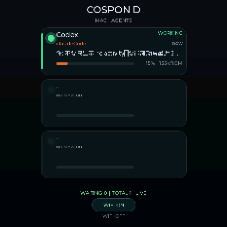
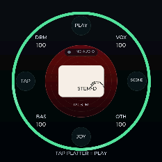
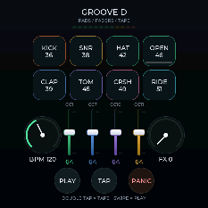
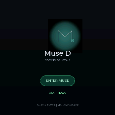

一块 M5 手表、一部安卓手机、一台 Mac，组成一套从「哼一句」到「成一首」、再到「戴在手上演奏」的完整系统。 手机负责想法与声音，手表负责手上的动作，Mac 负责乐理、LLM、MIDI 与 Agent。所有页面都可以离线使用， 有 Mac 时再自动接上 AI 与真实 MIDI。
打开 App 的默认页面。白色玻璃播放器、点阵轨道、专辑封面、MUSE/CEVTUO NOW AI，以及一个真正会转的中央圆盘。
读手机当前播放的媒体会话：标题、歌手、专辑、进度、播放态。中央圆盘是可视化的核心，也是 CEVTUO NOW AI 的入口。
/api/studio/ask，返回一句律动建议与 style/BPM/swing/chaos/energy 参数；点「做成律动」直接生成编排并切到 STEM。METADATA_KEY_ALBUM_ART/ART，缩到 168px JPEG 下行；没有封面时显示彩色核心。哼唱 → 音高 → 调性 → 鼓/贝斯/和弦/旋律 → 播放 / 变体 / MIDI。
所有按钮都能用，Mac 没起时也会降级而不是只报错。
按 Vinyl Record Store / Neumorphic Dark Knobs / Knob 03 / Knóbz 重做；搓盘、EQ、底噪、表演键全部接进音频链。
Cruz GR 的彩色玻璃垫 + Music Wave 的彩色正圆和弦垫；既能敲，也能把敲击听回 16 步。
Mix Music 的径向步进 + Music Wave 的细刻度轮；能写、能随机、能存 A–D、能在 Mac 没起时本地生成。
手机是控制台：Mac 服务、串口桥、手表、MIDI、Agent、最后更新，一眼看到。
1/0（会话/待批）和最近会话的 App · Agent · 状态 · 活动；读不到会明确说「CrewTower 没会话」还是「服务没起」。127.0.0.1（adb reverse）；Wi-Fi 填 Mac 局域网 IP。/api/groove/status 的 lanIp，通过串口发 NET <ip>，手表存进 NVS。四个手表 App；COSPON D 看 Agent、滚动最近 3 条消息、ALLOW/DENY、WIFI 一键。




G1 PERM <id> allow|deny，Mac 桥转成 /api/agents/decide，审批队列唤醒 hook。没有待批时自动隐藏。/api/agents/watch，和 USB 用同一套行协议。NET <ip> → 手表 NVS，重启不丢。G1 STEM/MUTE/SOLO/MASTER/BPM/LOOP/FX/START/STOP；Mac → 手表：NP/SESS/AG/MSG/PERM/NET。手表 GIF 来自固件 CAP1 屏幕录制协议；COSPON 新界面已刷入，视频为旧版界面示意。
这一节把「它为什么能用」写清楚：每个算法做什么、在哪、怎么验。
不用全局自相关（纯周期信号每个周期倍数都高，取最大会落到大 lag）。YIN 用差分函数、累积均值归一化、取第一个 d'<0.20 的谷、抛物线插值；再叠 5 帧中位 + 连续 2 帧一致（±1 半音）。离线 110/220/330/440/660/880Hz 全对。
12 音级直方图按音长加权；与 12 大调 / 12 小调的 Krumhansl 权重相关，取最高分；可被 7 种调式覆盖。和弦名由级数算根/三/五，按实际移调落到音名。
风格表给出 16 分鼓型与和弦进行；chaos 加额外帽子/装饰音/力度抖动；energy 乘全轨力度；swing 推奇数 16 分；humanize 微移 step/力度；transpose 移非鼓轨；同一 seed 永远同一份。变体/变异/对话/灵感都走它。
鼓组/贝斯/和弦/旋律各有一套波形与包络；Reese +22 音分失谐、Sub 900Hz 滤波、Acid Q=12；marimba/pluck/strings/choir 等用采样，其余用振荡器。主链：input → 三段 EQ → filter → crush → drive → out；另有一条 delay/feedback/wet 与 analyser。
AudioPlaybackCapture 抓本机播放；一阶低通在 200/800/3000Hz 切四段，RMS → 0..127；快起慢落；20Hz 发 CC。Android 14+ 先 startForeground 再 getMediaProjection，并请求整个屏幕。
Format 0、division 480（16 分=120 tick）；tempo meta → 每轨 program change → note on/off → end of track；鼓通道 9、贝斯 1、和弦 2、旋律 3；文件布局必须 [MTrk][长度][事件]。
NOW AI 调 /api/studio/ask，把歌名/歌手 + 当前参数交给 LLM，返回一句解释 + patch；离线用标题哈希的确定性建议。Groove AI 调 /api/studio/inspire，没有 key 时用本地灵感卡。两者都明确标注来源。
CrewTower 已做机器级会话采集（Claude/Codex/DSH，含 Cherry Studio），Cospon D 直接读它的 sessions.json，不另挂一套 hook。服务端加最近 3 条消息（读 transcriptPath）、待批队列 /request /wait /pending /decide；手表用 PERM 行走决定。
USB 与 Wi-Fi 共用同一套文本行：AG / SESS / MSG / PERM / NET。/api/agents/watch 输出同样的行；手表连上 Wi-Fi 后每 2 秒 HTTP GET 并逐行喂给同一个 handle_line()，所以两条链路不会长出两种行为。
黑胶：径向渐变 + 52 圈凹槽 + 旋转高光 + 标签 logo（darken 融白底）。新拟物旋钮：外环凸起/凹井/刻度 mask + SVG 弧 + rAF。PERFORM：34 点按角度距离点亮，span 随 RMS 变宽。SEQ 轮：72 根刻度按主题换色。所有视觉都有 DOM/canvas 断言。
默认浅色 `data-theme=light`，夜间按钮写 localStorage；浅色主题显式补回全部激活态。状态栏/导航栏颜色跟随页面与主题；WebView 避开 110px 顶部 cutout + 39px 导航，页面 innerHeight 903 vs 整屏 960。折叠屏用 ResizeObserver + 切页重新量黑胶和灯圈。
Mac 没起：编曲/变体/对话不可用，但 SEQ/GROOVE 生成会按风格密度本地随机并标注；NOW AI 用本地建议；主题、播放器、唱机、鼓垫、和弦垫、音序器、本地 MIDI 全部可用。降级不会假装成在线结果。
按页面分组；打勾的是这一版已经能操作、能录到的。
| 页面 / 端 | 功能 | 说明 |
|---|---|---|
| NOW | 默认首页 / 玻璃大标题 / 点阵圆盘 / 彩色核心 / 专辑封面 / 小封面卡 / 进度环 / 走带 / XL / MASTER 环 / 主题 / CEVTUO NOW AI / 离线建议 | 读 MediaSession；封面走原生 Bitmap；AI 可生成律动并切 STEM。 |
| STEM | HUM / 风格 / 调式 / 音色 / BPM / 小节 / 编曲 / 播放 / 一键成曲 / 4 变体 / 9 变异 / 保留丢弃 / 历史 / 哼唱做贝斯 / 导出 MIDI / 对话修改 / Groove AI / AI LIVE / 和弦行 | 确定性乐理 + LLM；采样 + 合成；失败有本地兜底。 |
| REAL-TIME | FILTER / DRIVE / SPACE / SWING / CHAOS / ENERGY / OCTAVE / TONE / CRUSH / DETUNE / LCD / 黑胶搓盘 / 唱臂 / 三段 EQ / NOISE / MAIN / VOCAL / 波形 / PERFORM 穹顶 / 灯圈 / STUTTER / CLICK / JOG 0 / OUT / MIDI 监视 | 全部接进音频链；搓盘发 PLATTER；旋钮发 CC 24–34。 |
| GROOVE | 8 鼓垫 / 力度三档 / DRUM-SYNTH-CHORD / ARP / 9 和弦圆垫 / XY / 4 CC 推子 / 生成 16 步 / 加花 / 听懂鼓点 / 写回 STEM / TAPE STOP / PANIC | 彩色玻璃垫 + 彩色正圆；本地发声 + MIDI。 |
| SEQ | 16 步 × 4 轨 / 三档力度 / M/S / A–D 模式 / CLEAR / RANDOM / 加花 / 左右移 / COPY / PASTE / AI 生成 / SAVE / PROB / SWING / TAP / BPM± / 3 宏旋钮 / 径向轮 / 本地试听 / 和弦 chips | 离线和在线都可生成；模式存 localStorage。 |
| LINK | 六格状态 / 手表反馈条 / Agent 1/0 + 活动 / API KEY / MAC HOST / SAVE/TEST / 日志 / 发送 Mac 地址 / 主题 | 手机端管理面；Wi-Fi 与 USB 两种入口。 |
| COSPON D | 3 张会话卡 / 详情 / 最近 3 条消息滚动 / ALLOW / DENY / WIFI 一键 / HTTP 轮询 / NVS 保存 Mac 地址 / 震动提示 | USB 串口或 Wi-Fi；权限浮层只在有待批时出现。 |
| Stem D | 四段弧 / 静音 / 独奏 / 黑胶搓盘 / now playing 标签 | 手表 → Mac 的 G1 协议。 |
| Groove D | 8 鼓垫 / 4 CC / BPM/FX / 磁带机 | 与手机 GROOVE 同一套 CC/音符协议。 |
| Muse D | 第二个 OTA 槽入口 / 双系统 / 电源轨恢复 | OTA 分区表 ota_0 4.5MB / ota_1 4MB。 |
| 音频 / AI | YIN / Krumhansl / 确定性编曲 / 9 变异 / WebAudio / 8 采样 / MediaProjection CC / SMF / LLM ask / inspire / 离线兜底 | 算法细节见上一节。 |
| 视觉 | 黑胶 / 唱臂 / 新拟物旋钮 / LCD / 玻璃穹顶 / 灯圈 / 彩色圆垫 / 玻璃垫 / 径向轮 / 玻璃大标题 / 浅色夜间 / 系统栏 / 折叠屏重排 | 12 个 Dribbble 参考，每个至少两个落点。 |
不把「没验过」写成「已完成」。
decide 已通。M5StopWatch-XXXX 配置 Wi-Fi，并在 LINK 里按「发送 Mac 地址到手表」（USB 连着时）；之后拔线即可轮询。/api/agents/request；队列和手表键已就绪。手机、手表、Mac 三步。
adb reverse tcp:8765 tcp:8765，LINK 的 MAC HOST 填 http://127.0.0.1:8765。tools/grooved.sh install 已让服务监听 0.0.0.0:8765；LINK 填 http://<Mac 局域网 IP>:8765。bash tools/grooved.sh status 看到 server/bridge loaded、Agent 1/0。~/Library/Logs/grooved-link.log、grooved-serial.log。tools/grooved.sh status|start|stop|restart|install|uninstall。